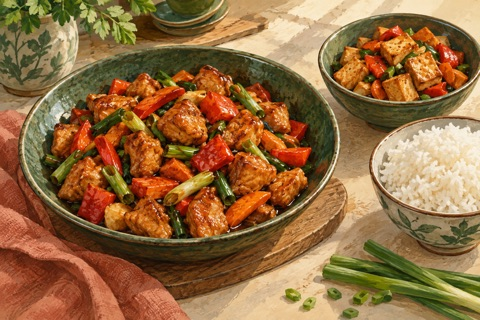

← Viikko 3 · Kiina
Lauantai / Päivällinen
Gong bao -tyylinen kana ilman maapähkinöitä
Kana-paprikawokki kirpeänmakeassa kastikkeessa, yhdelle tofuversio.

Ainekset
Määrät yhteensä 4 annokseen, myös lisukkeisiin ja mahdolliseen kasvisversioon. Vesi mainitaan valmistusohjeessa.
- Broilerin luuton liha450 g
- Kiinteä tofu150 g
- Paprika300 g
- Porkkana200 g
- Kevätsipuli75 g
- Tuore inkivääri20 g
- Valkosipulinkynnet3 kpl
- Soijakastike40 ml
- Riisiviinietikka30 ml
- Sokeri20 g
- Maissitärkkelys20 g
- Rypsiöljy (myös uppopaistoon)30 ml
- Jasmiiniriisi (kuiva)300 g
- Chilirouhe (tarjolle erikseen)2 g
Valmistus
- Keitä riisi pakkauksen ohjeen mukaan. Kuutioi broileri ja tofu. Sekoita soijakastike, riisiviinietikka, sokeri, maissitärkkelys ja 120 ml vettä. Ota neljännes puhtaasta kastikkeesta talteen tofupannua varten.
- Ruskista tofu pienellä pannulla 5 ml:ssa öljyä 6–8 minuuttia. Paista broileria suuremmalla pannulla 10 ml:ssa öljyä 7–10 minuuttia, kunnes sisälämpötila on vähintään 75 °C 30 sekunnin ajan. Siirrä molemmat sivuun omiin kulhoihinsa.
- Pilko paprikat ja porkkanat pieniksi paloiksi. Paista puhtaalla pannulla lopussa 15 ml:ssa öljyä 5 minuuttia sekoitellen. Lisää hienonnettu inkivääri, valkosipuli ja kevätsipulit. Paista vielä minuutti.
- Jaa kasvikset kana- ja tofupannuihin suhteessa 3:1. Sekoita kumpikin kastikeannos ennen pannulle lisäämistä. Keitä hiljalleen 2–3 minuuttia, kunnes kastike sakenee ja ruoka on kauttaaltaan kuumaa. Tarjoa riisin kanssa ja chilirouhe erikseen.
Huomio
Maapähkinät jätetään pois eikä niitä korvata muilla pähkinöillä.
Kypsymisaika riippuu laitteista ja ainesten koosta. Kypsennysohjeet (englanniksi): tarkista ohjeessa mainittu sisälämpötila puhtaalla paistomittarilla.